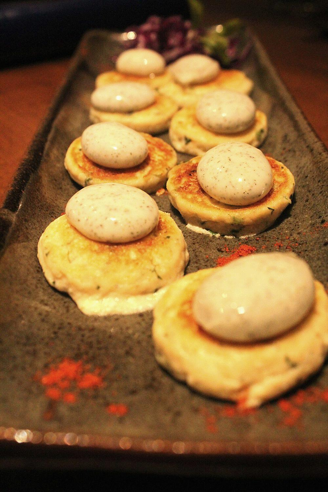

Dahi ke Kebab
crisp-shelled hung yogurt kebabs that dissolve into cream the moment you bite

Contains: dairy, gluten
Ingredients
Quantities for 4.
- 800g full-fat, hung overnight to give about 350g thick curd Yogurt
- 100g, finely grated Paneeradds body so they hold shape
- 3 tbsp, dry-roasted until it smells nutty Besan
- 4 slices, crusts off, blitzed to crumbs Breadfor coating
- 1 small, very finely chopped Onion
- 2, minced Green Chilli
- 1 tsp, minced Ginger
- 1/2 tsp, ground Cardamom
- 1/2 tsp White Pepper
- 1/2 tsp, to finish Chaat Masalaoptional
- 3 tbsp, chopped Coriander Leavesoptional
- 4 tbsp, for shallow frying Ghee
- to taste Salt
Cookware
stovetop, tawa
Before you start
- Hang the yogurt in muslin overnight in the fridge with a weight on top. It must be dry enough to crumble, not spoonable. This is the whole recipe.
- Roast the besan in a dry pan until it turns a shade darker and smells like toasted flour, then cool it completely before mixing.
- Chill the shaped kebabs 20 minutes before frying so they set.
Method
- Tip the hung yogurt into a bowl and mash in the grated paneer until smooth and even.
- Squeeze the chopped onion in your fist over the sink to wring out its water, then fold it in with the green chilli, ginger, cardamom, white pepper, coriander leaves and salt.Wet onion is the usual reason these kebabs fall apart in the pan.
- Work in the roasted besan a tablespoon at a time until the mixture just holds a shape when pressed. It should feel soft, almost too soft.
- Rest the mix 15 minutes, then shape into 10 flat discs about 5cm across and 1.5cm thick with lightly oiled palms.
- Press each disc into the breadcrumbs on both sides and on the rim, then chill 20 minutes on a lined tray.
- Heat 2 tbsp ghee on a tawa over medium-low heat. Lay in half the kebabs, leaving space between them.Medium-low. High heat browns the crumb before the inside warms and the kebab bursts.
- Fry undisturbed 3-4 minutes, until the underside is set and deep gold, then turn once with a thin spatula and give the second side 3 minutes.Turn once only. Every flip after that is a chance for them to break.
- Drain briefly on paper, repeat with the rest, dust with chaat masala and serve hot with mint chutney.
Storage
Eat them straight from the pan; they soften within the hour. The uncooked shaped kebabs keep 24 hours refrigerated on a covered tray and actually fry better cold.
Nutrition Medium estimate
| Per serving302 g | Per 100 g | |
|---|---|---|
| Calories | 376+ kcal | 125+ kcal |
| Protein | 15.1+ g | 5+ g |
| Carbohydrate | 21.8+ g | 7+ g |
| of which sugars | 13.1+ g | 4+ g |
| Fibre | 2.6+ g | 1+ g |
| Fat | 26.2+ g | 9+ g |
| of which saturated | 15.5+ g | 5+ g |
| of which unsaturated | 8.5+ g | 3+ g |
The + means ingredients given to taste rather than by weight are counted as zero, so the true figure is a little higher than shown. Worked out from the listed quantities. Some of the ingredient list is given to taste rather than by weight, so treat these as a guide. Ingredients given to taste rather than by weight are counted as zero, so the real figure is a little higher than this. The + says so. Some ingredients have no exact match in the nutrient database and use the nearest equivalent: chaat masala. Estimated from raw ingredients using USDA FoodData Central. Cooking changes are not modelled, and added salt is excluded, so sodium is not given.
Recipe v1.0.0, last updated 2026-07-31. Curated for Khaana and kept under version control.